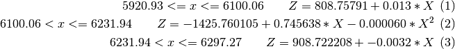

Ejercicios Lectura y escritura de ficheros¶
Note
Los ficheros de datos necesarios para la realización de los ejercicios se pueden descargar desde la plataforma moodle de la asignatura.
Note
Se denominan ficheros CSV, (Comma Separated Values), a los ficheros de texto formados por filas de datos, separados entre sí por una ‘,‘ (coma). Cada fila está separada de la siguiente por un salto de línea, carácter ‘\n‘. Está permitido utilizar de separador otro caracter en lugar de la coma. También está permitido que el fichero tenga una o más líneas de encabezamiento. Este tipo de ficheros pueden ser leídos directamente por las hojas de cálculo.
Ejercicio 1: Escribir un fichero CSV¶
Desarrollar una función que escriba una matriz de doubles en un fichero CSV. La función recibirá dos parámetros: una cadena de texto con el nombre del fichero que se quiere escribir, y una matriz de doubles con los datos a escribir en el fichero. La función devolvera un valor logical true si la grabación se realiza correctamente y un false en caso de que se produzcan errores durante la grabación. Los números se escribirán en el fichero utilizando el ‘.‘ (punto) como separador de decimales y la ‘,‘ (coma) como separador de datos dentro de cada fila.
Ejercicio 2: Leer un fichero CSV¶
Desarrollar una función que permita leer el contenido de un fichero CSV escrito por la función del ejercicio anterior. El fichero tendrá los valores de una matriz de doubles separados por coma, utilizando el punto como separador de decimales. La función devolverá la matriz de doubles si el fichero se leyó adecuadamente o una matriz vacía en el caso de que no sea posible leer el fichero.
Ejercicio 3: Leer ficheros CSV¶
El fichero ‘slopesProfile_5m.csv‘ contiene la abcisa s y la pendiente p de puntos cada cinco metros de un tramo de la carretera M-607 de Madrid. Se pide desarrollar una función que lea el fichero, almacenando los valores leídos en sendos vectores s y p. La función calculará e imprimirá en pantalla: (1) el número de puntos leídos, (2) la longitud del tramo y la pendiente media del tramo. En el caso de que la función no pudiera leer el fichero, mostrará un mensaje en pantalla informando del error, y terminará la ejecución.
Ejercicio 4: Leer ficheros CSV¶
Desarrollar una función que lea el fichero ‘slopesProfile_5m.csv‘ y dibuje el gráfico de pendientes.
Ejercicio 5: Contador de líneas¶
Desarrolle una función de nombre ‘lcount()‘ que reciba como parametro el nombre de un fichero y devuelva el número de líneas que tiene el fichero.
Ejercicio 6: Escribir ficheros CSV¶
El perfil longitudinal de cierto tramo de carretera se rige por las siguientes ecuaciones:

Se pide desarrollar una función que reciba como parámetros el nombre del fichero y el espaciamiento de puntos deseado y escriba el fichero CSV correspondiente a los puntos del perfil espaciados según el parámetro recibido.
Ejercicio 7: Leer ficheros CSV¶
Desarrollar una función que lea los ficheros generados por la función del ejercicio anterior y dibuje el gráfico de perfil correspondiente.